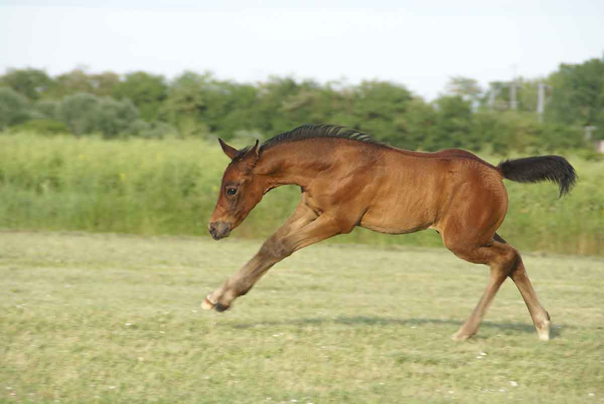
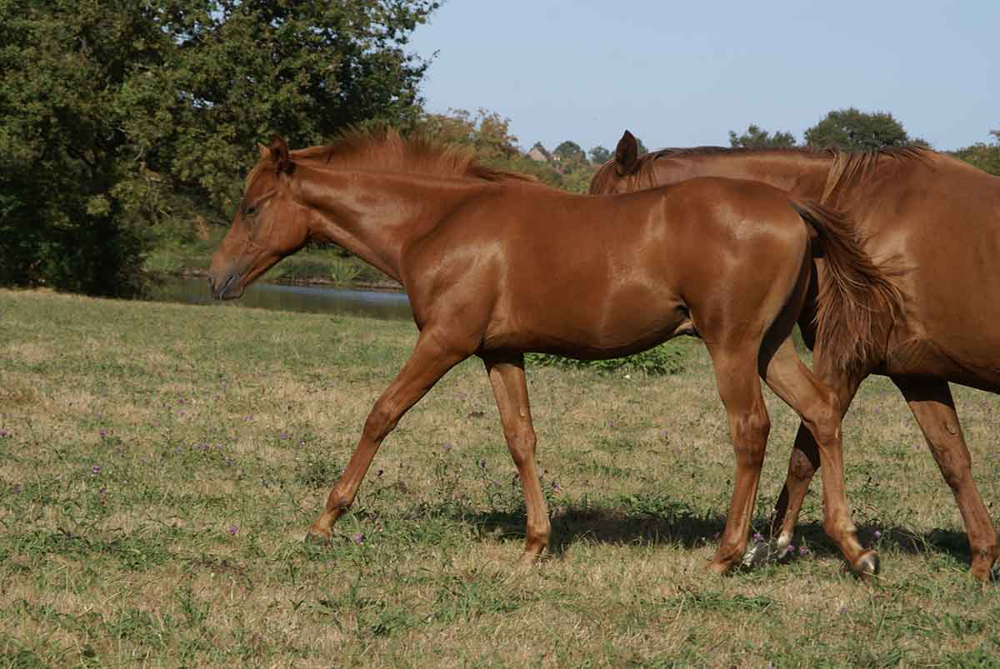
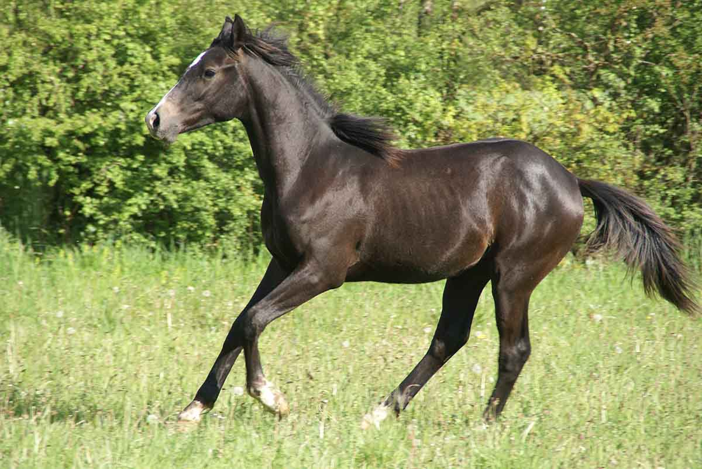
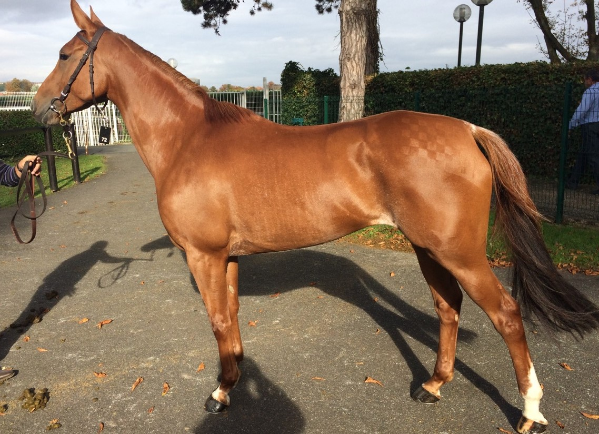
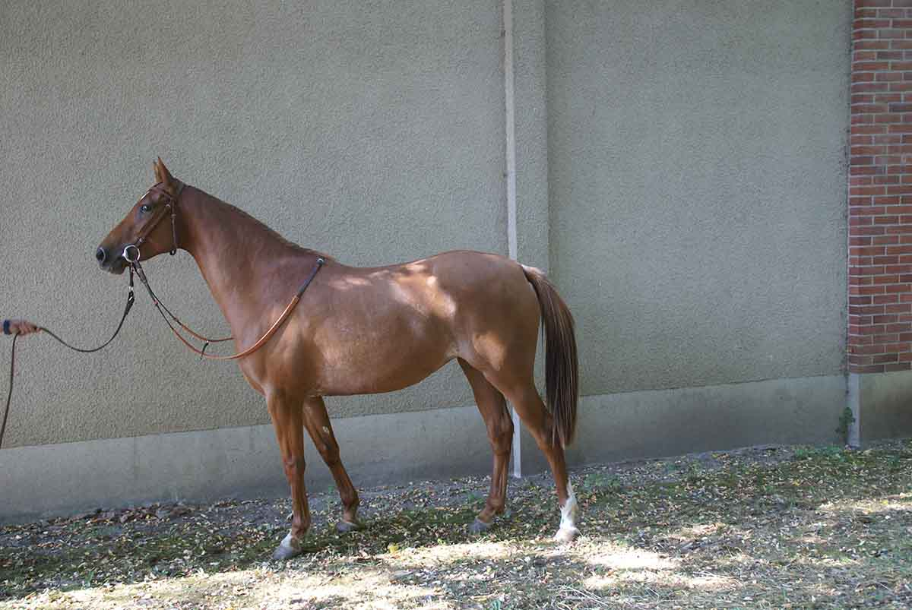
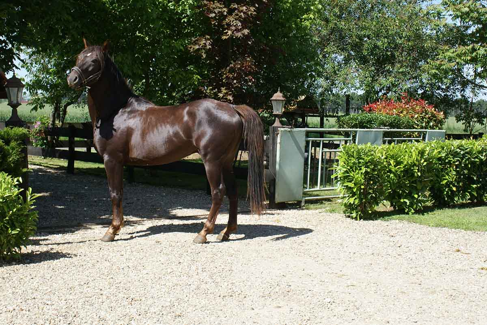
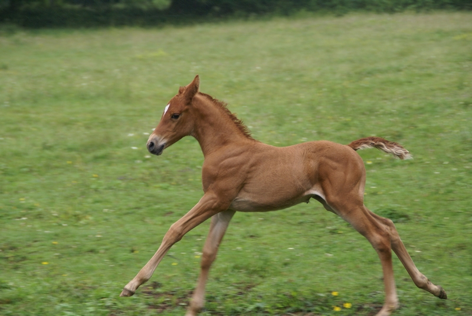
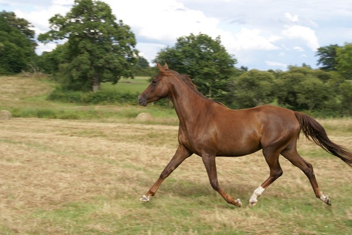

2020
Kirfaa du Breuil
Femelle, par Mu'Azzaz (Massamarie) x Wanaa du Breuil (x Monsieur Al Maury)
Kiblaa du Breuil

Femelle, par Al Mamun Monlau x Ezzahra du Breuil (x Munjiz)
Jawaa du Breuil
Femelle, par Al Mourtajez (Arwa) x Wanaa du Breuil (x Monsieur Al Maury)
Israa du Breuil
Femelle, par Mu'Azzaz (Massamarie) x Wanaa du Breuil (Monsieur Al Maury)
Hamza du Breuil
Mâle, né en avril 2017 par Jamaa du Breuil x Jaafer [Amer x Madjela]
A 4 mois

Gohar du Breuil
Mâle, né le 23/3/2016 (Al Mamum Monlau [x Munjiz] x Jamaa du Breuil)

Agé de trois semaines
Agé de cinq mois
Ghazi du Breuil

Mâle né le 29/4/2016 par Joscou du Cayrou (Munjiz) x Rhazya du Breuil

Âgé de 5 mois
Faruk du Breuil
Mâle né le 02/06/2015 par Divamer [Amer] x Paprika du Breuil)
Fawar du Breuil
Mâle, né le 30/05/2015 (Al Amyr [Amer] x Wanaa du Breuil)

Ezzahra du Breuil


Femelle alezane, née le 18/4/2014 (Jamaa du Breuil x Munjiz)
Essaouira du Breuil
Femelle alezane, née le 22/5/2014 (Tequila du Breuil x Munjiz)
Âgée de 30 mois
Drifa du Breuil
Femelle alezan par No Risk al Maury x Tequila du Breuil (x Dormane)
Chalwa du Breuil
Femelle alezan par Mahabb x Jamaa par Djouras-Tu Vulcain
Baume du Breuil

Mâle alezan par Monsieur Al Maury x Jamaa par Djouras-Tu
Wanaa du Breuil

Femelle alezane par Monsieur Al Maury x Jamaa par Djouras-Tu Vulcain
Vulcain du Clos
Mâle alezan par Monsieur Al Maury x Jamaa par Djouras-Tu Vulcain
VEGA du Clos
Femelle alezane par Monsieur Al Maury x Basta (x Love)
Vega
Courses d'endurance 2015: Vega du Clos (Basta x M. al Maury) qualifiée sur 60 km (Recologne-les-Rioz)
FC initiale 32 / FC intermédiaire 40 / FC finale 38 / Vitesse moyenne 12,37 km/h
Tequila du Breuil
Femelle baie par Dormane et Jamaa du Breuil x Djouras-Tu TEQUILA du BREUIL (vendue) Femelle baie par Dormane et Jamaa du Breuil par Djouras-Tu Pedigree de Tequila du Breuil Production 2013 Drifa du Breuil par No Risk Al Maury 2014 Essaouira du Breuil par Munjiz
Tian du Breuil
Mâle alezan par Tidjani x Basta (x Love)
Serouda du Breuil
Femelle baie par Dormane x Jamaa du Breuil (x Djouras-Tu) Serouda
Sésame du Breuil
Mâle bai par Kador du Bournais x WFA Prospect (x Khamil) Sesame
03/11: 20 km 13.182 km/h
04/11: 40 km 14.089 km/h
06/11: 60 km (vitesse libre)
03/13: 90 km (vitesse libre) CEI* à Durance (18 km)
Seffa du Breuil

Femelle alezane par Tidjani x Basta (x Love) Seffa
Pouliche, alezan, née en 2006, de Tidjani x Basta (Love).
Vendue. Jusqu'à 2017, poulinière au Haras du Grand Courgeon, puis engagée courses d'endurance.
Production
2012 : Gadab, mâle par Amer
2013 : Ibn Al Ameed, mâle par General
2014 : Muwahhab, mâle par Nizam
2015 : Garraffah, mâle parTabarak
2017 : produit par Majd Al Arab
Rhazya du Breuil

Femelle baie par Kador du Bournais x Basta (x Love) Rhazya
qualifiée 60 km (Pays-Bas)
3ème CEN Grolloo 80 km 09/2012
16ème CEI* Pontchâteau 2012 (14,132 km)
2013 : Paaren im Glien (D) CE** 120 km, 4°, 14.1 km
Raisin du Breuil
M, bai par Kador du Bournais x WFA Prospect (x Khamil) Raisin
02/10: 20 km 15.023 km/h
07/10: 40 km 15.018 km/h
08/10: 60 km 15.246 km/h
08/10: 90 km 13.200 km/h (vitesse libre)
02/11: 90 km 15.687 km/h
Quirfa du Breuil
F, alz par Kador du Bournais x WFA Prospect (x Khamil)
Parmesan du Breuil

M, bai par Kador du Bournais x WFA Prospect (x Khamil)
2009-10-24 4ème 15.434 km/h 90 km VLA1 PLOUGONVEN COATELAN / CREEF - COLLIN MICHEL
2009-08-01 3 14.998 km/h 90 km VIJC6 ST GILLES PLIGEAUX - J C COLLIN MICHEL
2009-05-24 5 14.999 km/h 90 km VIA1 SILFIAC / AR VINOJENN SKLAER - COLLIN MICHEL
2009-05-02 5 15.005 km/h 60 km jc6 GUIMILIAU / CREEF - Jeunes chevaux COLLIN MICHEL
2009-04-11 1 14.717 km/h 40 km jc6 MOUSTOIR AC / Jeunes chevaux COLLIN MICHEL
2008-09-21 4 14.999 km/h 40 km VIA3 CHATEAUNEUF DU FAOU / CREEF - GUEDE VERONIQUE
2008-09-07 1 12.000 km/h 20 km jc5 INZINZAC LOCHRIST - J C GUEDE VERONIQUE
Paprika du Breuil
Femelle baie par Kador du Bournais x Basta (x Love) Paprika Née en 2004 chez W. Poels, par Kador du Bournais et Basta par Love 24-10- 2009 8° 13.659 km/h 90 km VIP1 PLOUGONVEN COATELAN / CREEF - Pro FLOCH SANDRA CEI* 100 km - meilleure récupération - Le Perpre 10°
Rahaf (ex OUARKA du BREUIL)
F, alz, Kesberoy x Basta (x Love) Ouarka
Oiseau du Breuil

M, alz, Kesberoy x WFA Prospect (x Khamil) Oiseau 2009-11-07 4ème 14,078 130 km VLAE TARTAS - MARQUANT ROMANE Oiseau du Breuil 3ème Compiègne** 2011 avec Saeed Al Marri (UAE)